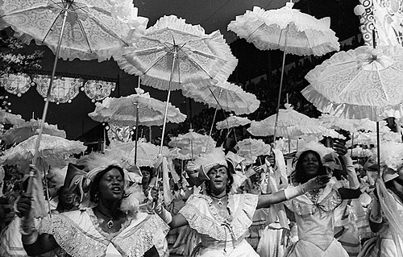
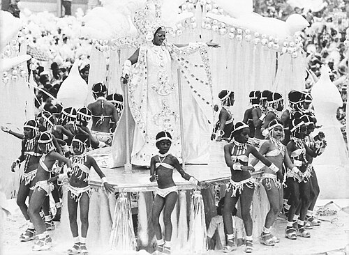
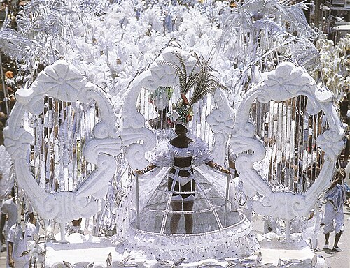
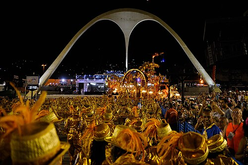
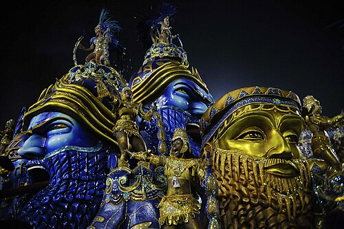
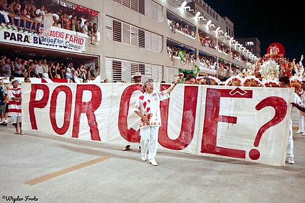
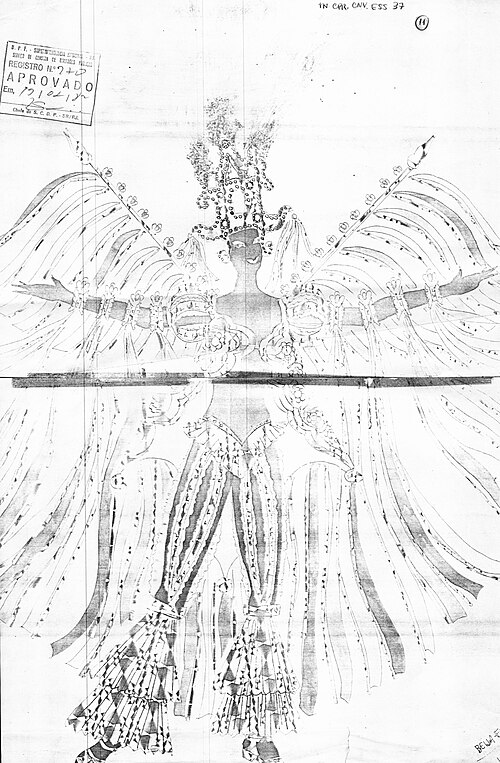
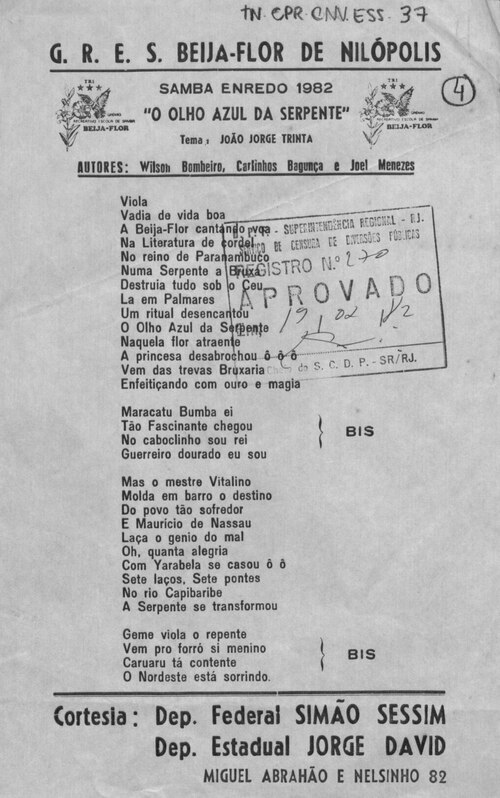

A escultura dourada que a cortina de plástico revela
Tomaz Silva/Agência Brasil · CC BY 3.0 br

Joãosinho no trono dourado, entre lixo e um rato gigante (Grande Rio 2010, homenagem a ele)
Carnaval.com Studios from The Inner Mission San · CC BY 2.0

1976, Sonhar com rei dá leão, o 1º título na Beija-Flor
Anibal Philot · CC BY 2.0

1978, A criação do mundo na tradição Nagô
Luiz Pinto from Rio de Janeiro, Brazil · CC BY-SA 2.0

1983, A grande constelação das estrelas negras
Ricardo Chaves from Brasil · CC BY 2.0

Apoteose, Beija-Flor 2016
Tomaz Silva/Agência Brasil · CC BY 3.0 br

Beija-Flor, campeãs 2016
Agência Brasil Fotografias · CC BY 2.0

Beija-Flor 2016
Tomaz Silva/Agência Brasil · CC BY 3.0 br

Beija-Flor 2016
Tomaz Silva/Agência Brasil · CC BY 3.0 br

Beija-Flor 2014
Fernando Frazão/Agência Brasil · CC BY 3.0 br

Beija-Flor 2014
Fernando Frazão/Agência Brasil · CC BY 3.0 br

Viradouro 1998, POR QUÊ?
Wigder Frota · CC BY-SA 4.0

Desenho de fantasia enviado à Censura, 1982 (domínio público)
UnknownUnknown · Public domain

Samba-enredo carimbado APROVADO pela Censura, 1982 (domínio público)
UnknownUnknown · Public domain